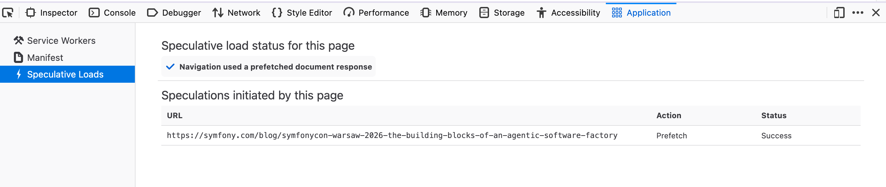
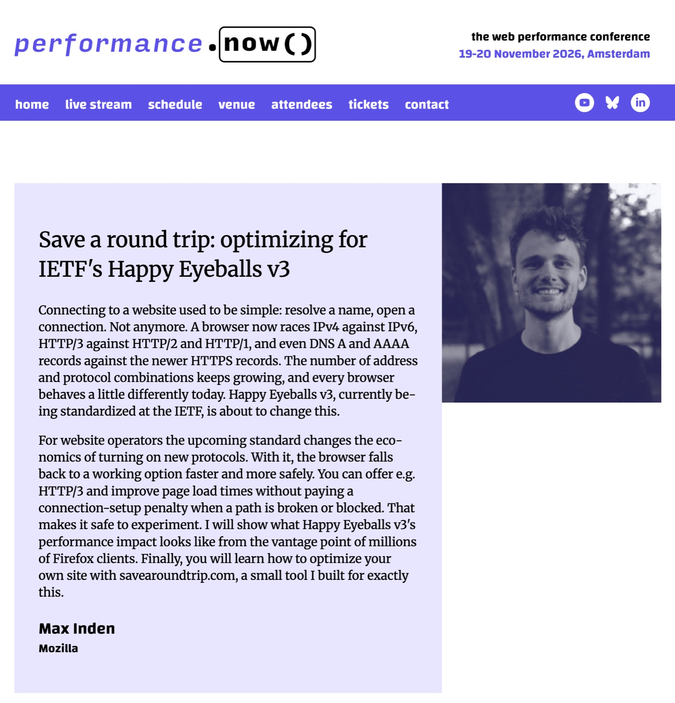

Mozilla’s Memos
Firefox: new measurement capabilities
& faster navigations
- Andrew CreskeyPerformance Engineering, Mozilla
- Nazim Can AltinovaPerformance Tools, Mozilla
What’s new for RUM in Firefox
- 01New measurements
- 02Resource & Navigation Timing
- 03Speculation Rules
- 04Happy Eyeballs v3
- 05Repeat visits
- 06Critical rendering path
- 07Observability
- 08Timeline interop
01Measuring more of the user experience
02Richer Resource & Navigation Timing
deliveryType enabled by default, including "cache".firstInterimResponseStart support.resourcetimingbufferfull03Speculation Rules prefetch
deliveryType="navigational-prefetch" identifies navigations served from prefetch.Firefox desktop prefetch progress on WPT
Share of subtests passing in /speculation-rules/prefetch, experimental runs on wpt.fyi
| Browser | Date | Passing | Total |
|---|
Speculation Rules is currently enabled only in Firefox desktop. Results begin Aug 2026, when these tests started running in Firefox CI. Weekly samples.
What Nightly sees so far: adoption
<script> tagHomepages: Tranco top-1000 crawl with Firefox Nightly 158.0a1. Telemetry: Firefox Nightly desktop, Oct 30 – Nov 12 2026. Use counters over ~48M top-level pages. A page can deliver rules both ways.
What Nightly sees so far: speed
Foreground top-level loads served from prefetch (~136k) vs loads with eligible rules that were not served (~152k). Firefox Nightly desktop, Oct 30 – Nov 12 2026. Observational: served navigations are same-origin and may differ in other ways.
Speculative Loads in DevTools
Application panel → Speculative Loads: whether this navigation used a prefetch, and the speculations this page started.

For now, turn on devtools.application.speculativeLoads in about:config.
04Faster connection establishment
The browser’s algorithm for picking how to connect to a server.
An IETF HAPPY working group draft, with authors from Apple and Google. v1 and v2 raced IPv6 against IPv4.
- Race QUIC vs TCP, not just IPv6 vs IPv4
- Find HTTP/3 early via HTTPS DNS records
- Fall back fast when a path is broken or blocked
- Make turning on HTTP/3 safe for sites
04Faster connection establishment
With Happy Eyeballs v3, more Firefox page loads use HTTP/3.
Details in Max’s talk →
Save a round trip: optimizing for IETF’s Happy Eyeballs v3
Max Inden, Mozilla
performance.now() · Amsterdam
Friday 20 Nov 2026 · 11:30

Over to Nazim
Nazim Can Altinova, Performance Tools, Mozilla
05Faster repeat visits, smaller transfers
06More control over the critical rendering path
blocking="render"imagesrcset support without href.07Observability beyond successful page loads
ReportingObserver callbacks now receive the observer as this. Buffered reports are no longer replayed when observe() is called again after disconnect().08Performance Timeline data quality & interop
PerformanceEventTiming.duration no longer keeps growing while a native context menu is open.first-input is now returned by getEntries() / getEntriesByName(). getEntriesByName() filters navigation by type and returns paint entries in order.LCP and INP from Firefox are more accurate, and cross-browser comparisons mean more.
Late-loading scripts still see first-input and LCP through the buffered flag.